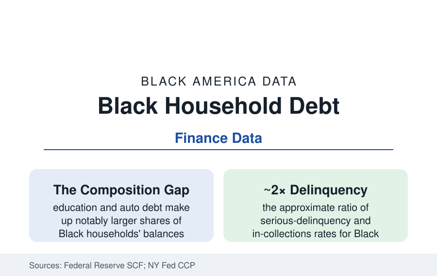

Black Census
Black Household Debt: Less of It, Heavier to Carry
Black households carry less total debt than the national average — and more of it in the expensive kinds, against lower incomes. The Federal Reserve's debt file.

The debt data invert the stereotype in the first line and confirm the structure in the second: Black households hold less debt in total than the typical American household in the Federal Reserve's Survey of Consumer Finances — and what they hold is weighted toward the most expensive kinds (credit cards at penalty-era rates, auto loans, education debt), serviced out of the income file's lower wages, with delinquency and collections rates running near twice the national figures in the credit-panel maps. Debt is a ratio before it is a balance, and this article reads both sides of it.
The Portfolio: What the Balances Are Made Of
The SCF's composition tables draw the structural difference plainly: for the median white household the mortgage dominates the balance sheet (the house as leveraged asset — the debt that builds the wealth file's equity); for Black households the mortgage's share is smaller (the homeownership gap arriving as a debt-composition fact), and the shares of education debt (the student-loan file's balances — larger relative to income, longer-held, the PLUS layer inside them), auto debt (the car-dependence file's loans — the credit-scoring and dealer-markup data of the consumer-protection record attaching here: the CFPB's and the academic audit studies' findings on pricing discretion in auto credit), and revolving card debt (the emergency-liquidity instrument of the liquid-savings file — the card as the household's shock absorber, priced accordingly) all run heavier. The unsecured tail completes the portrait in the alternative-credit data: the payday, title, and buy-now-pay-later usage rates in the Fed's household-wellbeing survey running above average for Black households — the fringe tier whose prices make the mainstream card look gentle, and whose customer base the mainstream file's denials manufacture.
The Burden Ratios: Payments Against Income
Where the file turns is the denominator: the debt-service and payment-to-income measures (the Fed's household debt-service ratio by demographic in its research releases; the SCF's payment-burden tables) showing Black households devoting comparable or larger income shares to smaller balances — the arithmetic of the rate spread (the credit-score distribution's lower median in the CFPB and bureau data, itself substantially a record of the income volatility the same files document — thin files, medical collections' documented skew in the bureau data the bureaus have lately been forced to trim, the score as the economy's memory of the gap rather than a character report) compounding into every loan's price. The delinquency geography in the Urban Institute's credit maps: the share of adults with debt in collections running near or above a third in majority-Black counties against roughly half that in white counties in their county series; the medical-debt-in-collections map overlaying the health section's access map county for county; and the student-loan default file's concentration (the default rates by institution and neighborhood — the for-profit map and the debt file in their shared geography). The bankruptcy data register the system's final accounting: Black filers' over-representation in Chapter 13 (the wage-earner plan) against Chapter 7 (the fresh start) in the landmark consumer-bankruptcy studies — with the attorney-steering findings inside that literature among the consumer-law record's most documented disparities, and the 13's lower completion rate converting the steering into outcome.
The Wealth Mechanics: Debt as the Anti-Asset
Read against the net-worth file, the debt composition explains a mechanism the income data alone cannot: wealth compounds from the difference between what a household earns and what its balance sheet costs it, and the Black household's balance sheet is systematically more expensive to run — higher rates on smaller appreciating assets, larger shares in depreciating or non-asset debt, the emergency tier's prices for the shocks the liquid file cannot absorb, and the collections-and-default records taxing the next decade's housing and employment screens (the credit check in the rental and hiring files). The policy instruments in the current record map onto the mechanisms with unusual precision: the medical-debt reporting reforms (the bureaus' voluntary removals and the rule-making rounds), the credit-scoring modernization (the rental-payment and cash-flow data's entry into the score models — the on-time rent of the renter file finally legible to the system), the auto-pricing enforcement actions, and the student-debt file's cancellation litigation — each aimed at a priced item in this article. The household's own strategies fill the survey data between the lines: the debt-aversion the SCF's lower balances partly record (the mortgage-application discouragement data — creditworthy households not applying, having priced the denial in), the family lending tier inside the kinship file serving as the unpriced credit union of first resort.
Reading the Debt Data
Less debt, heavier debt: the file's two facts are one fact — a population rationed out of the cheap, asset-building credit and concentrated in the dear, survival kind, then scored for the pattern. The Federal Reserve publishes both halves of that sentence in the same tables. Reading them together is the whole assignment, and it is the assignment this census section exists to do.
More in Black Census
The Black Population of the United States: Size, Definitions, and Distribution
The Black population of the United States totals 52.8 million — 15.4 percent of the nation. How the Census Bureau defines and counts the population, and where it lives.
Black Median Household Income in the United States
Black median household income stands at $56,490 in the Census Bureau's annual income report — how the figure is measured, how it compares, and what drives it.
The Black Poverty Rate: Levels, Children, and the Long Trend
The official Black poverty rate is 17.1 percent — against 11.1 percent nationally and 7.7 percent for non-Hispanic White Americans. How poverty is measured and what the data show.
Source: Federal Reserve Survey of Consumer Finances and Financial Accounts; Federal Reserve Bank of New York Consumer Credit Panel; Urban Institute debt research; CFPB data.